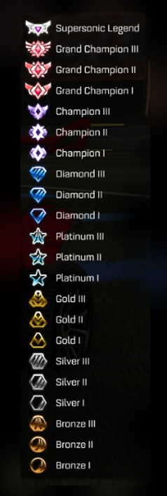

Rocket League conta com um sistema de rankings bem dinâmico para
determinar o nível de habilidade dos jogadores, as filas de partidas
rankeds se adequam ao nível da equipe e você sempre cairá com adversários
no seu nível, os rankes/patentes são divididos em nivéis e divisões. Os nivéis percorrem cada patente tendo na maioria das vezes 3 níveis, somente
o nivel mais alto é único tendo só 1 nível como por exemplo bronze que é a patente
mais baixa do jogo, tem 3 níveis,bronze I, bronze II e Bronze III. Para avançar de Bronze I para Bronze II por exemplo você terá que passar
por divisões, em qualquer patente terá quatro divisões, ganhando de partidas você
avança nas divisões, depois avança os niveis e por fim as patentes.
Patentes

Imagem representativa dos rankings do Rocket League. — Foto: Ilustração
O site abrange conteúdos relacionados ao jogo Rocket League, criado pela Psyonix, tal conteúdo foi escolhido por ambos
os desenvolvedores, pois os mesmos possuem conhecimento e jogam o jogo frequentemente. O intuito desse site é trazer
informações sobre o jogo e aplicar os conhecimentos adquiridos na disciplina de Linguagens de Marcação.